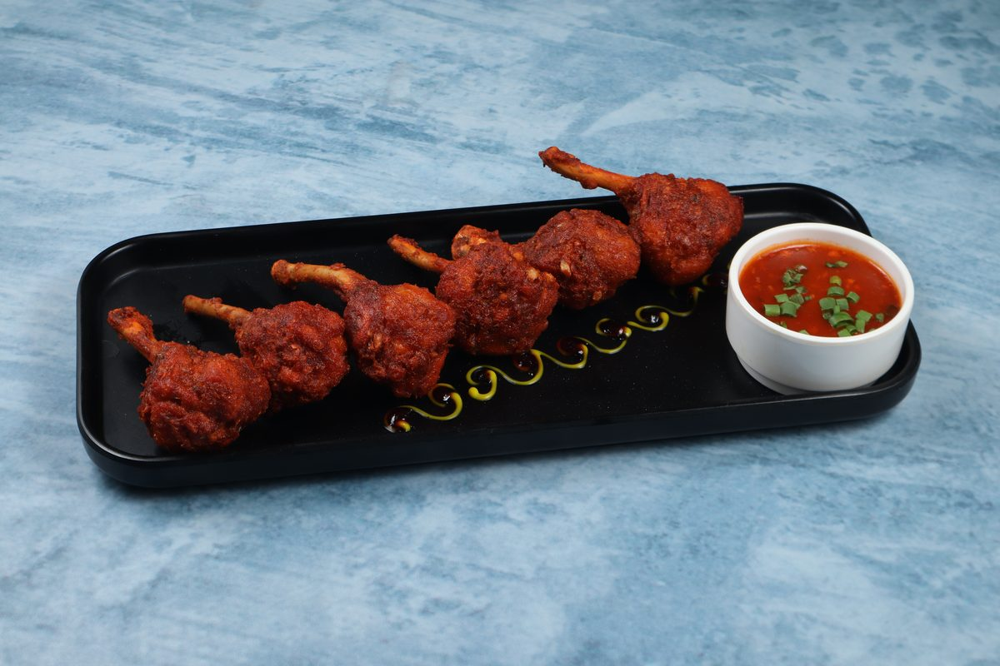

We started Zingara with one obsession: to make biryani the way it deserves to be made — fresh, spiced, and served with pride. What began in Horamavu has grown into a neighbourhood institution.
Zingara isn't a chain. It's not a franchise. It's a restaurant that grew out of a genuine love for South Indian food and a conviction that Horamavu deserved a biryani worth talking about.
We cook using authentic methods — sealed cooking, hand-pounded spices, Nati-style chicken — because shortcuts show up on your plate. Our recipes have been dialled in over time and they don't change. That's the point.
Today, Top Rated on Google with a consistent 4.3⭐ rating, our regulars come back not because it's convenient — though it is — but because the food is the same every time. That's the point.

Driving the vision of Zingara is Mr. K. Mohan, a passionate restaurateur with deep roots in the hospitality industry and a strong commitment to delivering memorable dining experiences.
Mr. Mohan began shaping his culinary journey through his association with the well-known Jalsa Group of Restaurants — a name that earned widespread appreciation for its flavorful cuisine and consistent quality. This experience laid a solid foundation for his understanding of food, service, and customer expectations.
Further expanding his footprint in the industry, he went on to establish Nyte Bar & Kitchen in Whitefield (ITPL), a vibrant lounge and bar concept created in association with the Jalsa Group. Nyte quickly gained attention for its lively ambiance and curated offerings. However, like many ventures in the hospitality sector, it faced unprecedented challenges during the COVID-19 pandemic and was eventually closed.
Undeterred by setbacks and driven by an enduring passion for food and hospitality, Mr. Mohan embarked on a new journey with Zingara Restaurant. This venture reflects his resilience and vision — bringing together his years of experience, refined taste, and dedication to quality.
Crafting a thoughtfully curated menu that celebrates authentic flavours and the very best of South Indian cuisine.
Ensuring consistency in taste and service — because a great restaurant is only as good as its worst day, and that standard is non-negotiable.
Creating a warm and inviting dining atmosphere where every guest feels at home from the moment they walk in.
Mr. Mohan's journey is a testament to perseverance and passion — a story of evolving with the times while staying true to the love for great food.
Authentic cooking isn't optional for us — it's the only way. Sealed vessel, intense heat, deep flavour. Every time.
We hand-pound our spice blend in-house. Packet masalas never touch our kitchen. That's why we taste different.
We plate fresh and serve immediately. No reheating, no batch leftovers. If it's not fresh, it doesn't leave the kitchen.